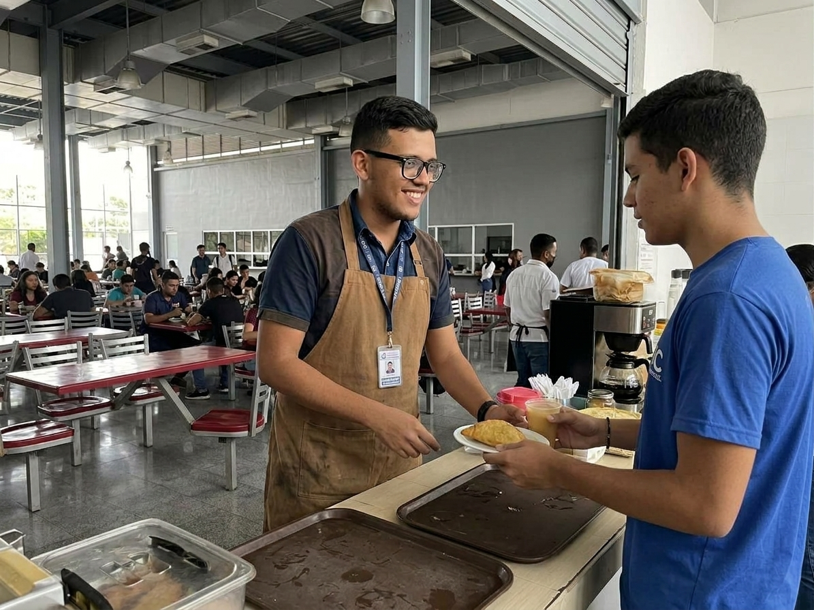

Conectar el futuro: La juventud de Carabobo entre la calle y la universidad
Las trabas del sistema tradicional, la brecha económica y la voluntad de quienes trabajan de lunes a viernes para estudiar los fines de semana.
Leer el ReportajeEl pulso de Valencia late al ritmo de una generación que camina por una delgada línea entre la subsistencia y la aspiración profesional. De lunes a viernes, las calles de la ciudad ven transcurrir una rutina incansable donde el asfalto, el sol y el esfuerzo diario se funden en uno solo. Para cientos de jóvenes en el estado Carabobo, el trabajo a tiempo completo no representa una alternativa opcional o un empleo pasajero; es el motor indispensable para sostener un hogar, aportar en la economía familiar y costear el anhelo de obtener un título universitario.
Conocer esta realidad de cerca implica ponerle rostro humano a las estadísticas. Es el caso de Adam Bellurih. Con las herramientas al hombro y recorriendo la geografía urbana, su labor diaria como técnico e instalador de fibra óptica garantiza que cientos de hogares se mantengan comunicados. Sin embargo, detrás de cada conexión tendida hay un sacrificio invisible: combinar largas jornadas de trabajo de campo con las exigencias académicas, lidiando al mismo tiempo con la incertidumbre de las fallas de servicios básicos y la escasez de un recurso tan frágil como el tiempo libre. Las horas posteriores a la jornada laboral se convierten en un pulso contra el agotamiento físico y la constante preocupación por saber si la energía eléctrica estará disponible para repasar los contenidos.
Las puertas de las grandes casas de estudio públicas de la región —históricamente referentes de movilidad social— se cierran de forma implacable para el estudiante trabajador debido al colapso y la ausencia de turnos nocturnos flexibles. Ante la inviabilidad de encajar en horarios diurnos rígidos que obligan a elegir entre el empleo o las aulas, alternativas como la educación de fin de semana se transforman en la única tabla de salvación para no desertar.
La historia de Adam encapsula esa resiliencia inquebrantable: la decisión firme de transformar el cansancio de lunes a viernes en asistencia puntual los sábados, demostrando que cuando la estructura institucional falla en ofrecer flexibilidad horaria, es la voluntad del joven la que termina rediseñando su propio camino hacia el futuro.
La vivencia individual de jóvenes como Adam no es un hecho aislado ni una excepción a la regla; al contrario, es el reflejo latente de una encrucijada estructural que atraviesa a miles de hogares en el estado Carabobo. Mientras las historias personales muestran la logística y el esfuerzo diario por evitar la deserción, el panorama normativo y estadístico expone la brecha cada vez más profunda entre el derecho a estudiar y las posibilidades reales de llevarlo a cabo.
El marco legal venezolano consagra garantías fundamentales en materia social. El artículo 3 de la Ley Orgánica de Educación y el artículo 25 de la Ley Orgánica para los Trabajadores y las Trabajadoras establecen el derecho pleno a la educación integral y al desarrollo continuo dentro del proceso social de trabajo. Sin embargo, en la práctica cotidiana, las dinámicas socioeconómicas actuales colocan al estudiante entre dos prioridades innegociables: la necesidad inmediata de generar ingresos y el deseo a largo plazo de obtener una formación profesional.
Los datos recientes de la Encuesta de Condiciones de Vida (ENCOVI) evidencian la dimensión de esta problemática: tres de cada diez hombres jóvenes abandonan sus estudios debido a presiones y necesidades laborales. Al mismo tiempo, entre el 80% y el 85% de los estudiantes dependen directamente del sistema educativo público para acceder a la educación superior.
Con jornadas laborales que promedian las 40 horas semanales y una marcada escasez de horarios nocturnos en las principales instituciones públicas de la región, el margen de maniobra para el estudiante se reduce drásticamente. Esta rigidez horaria obliga a reconsiderar el papel de la oferta académica pública, demostrando la necesidad urgente de adaptar las estructuras universitarias a las exigencias de una juventud que no puede permitirse dejar de trabajar.
Si la travesía de trabajadores como Adam evidencia los malabares cotidianos de quien intenta formarse contra reloj, y los datos macroeconómicos junto al marco legal desnudaban la rigidez del sistema, la respuesta institucional en el estado Carabobo expone el verdadero tamaño del desafío. Nos adentramos así en el núcleo del conflicto: el punto de quiebre de la educación superior tradicional y las alternativas que están naciendo desde los institutos tecnológicos para evitar la exclusión definitiva de la juventud obrera.
El colapso no es menor. Históricamente, los turnos nocturnos representaban el puente natural para que el estudiante de nuevo ingreso —donde aproximadamente un 60% necesita laborar simultáneamente para sostenerse— pudiera acudir a las aulas tras cumplir con su jornada laboral. Sin embargo, las graves restricciones presupuestarias han pulverizado prácticamente esta opción en las universidades públicas de la región. El sistema tradicional, diseñado para una realidad socioeconómica extinta, le cierra las puertas en la práctica a quienes sostienen la economía del país durante el día.
Ante este escenario de exclusión, la supervivencia académica ha exigido una reingeniería estructural. Los institutos tecnológicos de Carabobo han tomado la delantera implementando esquemas bimodales que hoy cobijan a más de la mitad de su matrícula (entre un 50% y un 56%). Esta modalidad combina jornadas presenciales intensivas los días sábado para las asignaturas prácticas con una plataforma virtual flexible de lunes a viernes, en horarios nocturnos pensados para el descanso relativo del trabajador (de 5:00 p.m. a 10:00 p.m.).
No obstante, la solución bimodal no está exenta de fricciones. El costo humano y físico es elevado: llegar agotado de una semana de trabajo prolongado merme inevitablemente el rendimiento del alumno en las aulas. Asimismo, transformar la oferta académica no ocurre por generación espontánea; exige superar pesadas trabas burocráticas, financieras y ministeriales para rediseñar mallas curriculares y adaptar los planes de estudio.
La educación superior en Carabobo no debería ser una prueba de supervivencia ni un privilegio condicionado por la flexibilidad del reloj. Pero mientras las grandes casas de estudio públicas se debaten entre la rigidez y el ahogo presupuestario, el sistema sobrevive gracias a la férrea voluntad de una juventud que se niega a rendirse. Adaptar las aulas a la realidad del estudiante trabajador ya no es una simple sugerencia pedagógica: es una urgencia social ineludible. Porque cuando un joven conecta su esfuerzo diario con su formación, no solo está obteniendo un título; está rescatando el futuro de toda una región.
El recorrido periodístico realizado a través de estas historias, cifras y dinámicas institucionales demuestra que la educación universitaria en el estado Carabobo atraviesa una etapa de profunda transformación. La imagen del estudiante dedicado de forma exclusiva a las aulas pertenece a otra época; la realidad actual está marcada por una juventud resiliente que asume jornadas laborales completas, lidia con las fallas de los servicios básicos y aun así busca las rendijas del sistema para continuar su formación.
El testimonio de Adam Bellurih, el rigor de los indicadores socioeconómicos y la búsqueda de soluciones bimodales frente al colapso de los turnos nocturnos apuntan hacia una misma conclusión: la urgencia de modernizar la estructura universitaria regional. La flexibilidad horaria, el rediseño curricular y la integración de modalidades mixtas no son meros ajustes administrativos, sino condiciones indispensables para garantizar la inclusión y evitar que la necesidad económica eclipse la movilidad social.
En última instancia, el motor que mantiene con vida el sistema educativo de la región no descansa únicamente en la infraestructura o en las decisiones normativas, sino en el compromiso individual de cada trabajador que decide no rendirse. Cuando las aulas abren sus puertas a la realidad del estudiante trabajador, el impacto va mucho más allá de la obtención de un título: se fortalece el tejido social, se impulsa el desarrollo regional y se asegura que el talento y el esfuerzo de los jóvenes sigan siendo la fuerza motriz del país.
Galería de Documentos
Accede a los archivos y fuentes documentales en formato PDF que respaldan esta investigación:
Ley Orgánica del Trabajo, los Trabajadores y las Trabajadoras
Marco normativo que consagra el desarrollo continuo y los derechos del trabajador estudiante (Art. 25).
Ley Orgánica de Educación (LOE 2009)
Garantía constitucional y legal sobre el derecho pleno a la educación integral e inclusiva (Art. 3).
Encuesta Nacional de Condiciones de Vida (ENCOVI)
Informe estadístico que aborda la deserción universitaria por causas laborales y la dependencia del sistema público.
Modalidad Bimodal de Estudios (IUTEPAL)
Documento institucional que expone la estructura de clases virtuales y jornadas presenciales los fines de semana.
Sobre los Entrevistados

Adam Bellurih
Técnico instalador de fibra óptica y estudiante universitario.

Msc. América Escobar
Subdirectora Académica Nacional de IUTEPAL.

Econ. Ana Isabel Belmonte
Economista.

Lic. Clara Petit
Jefa de Carrera de Diseño Gráfico.
Sobre mí

Sebastian Guarenas, estudiante del décimo semestre de Comunicación Social de la Universidad Arturo Michelena, en el municipio San Diego, estado Carabobo.
Contacto
Para mayor información, aportes o comentarios sobre esta investigación:
219016276@uam.edu.ve - prof.ricardo.graffe@uam.edu.ve